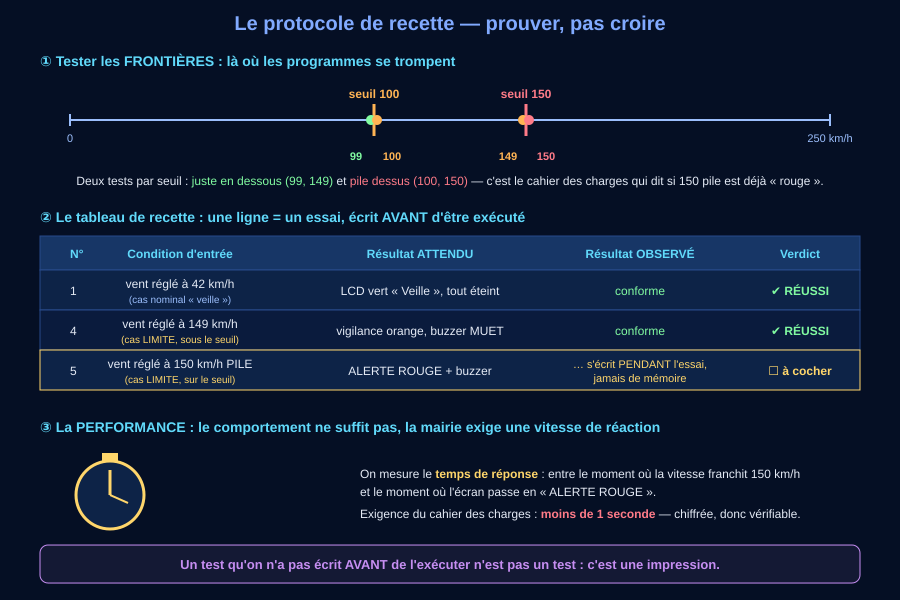
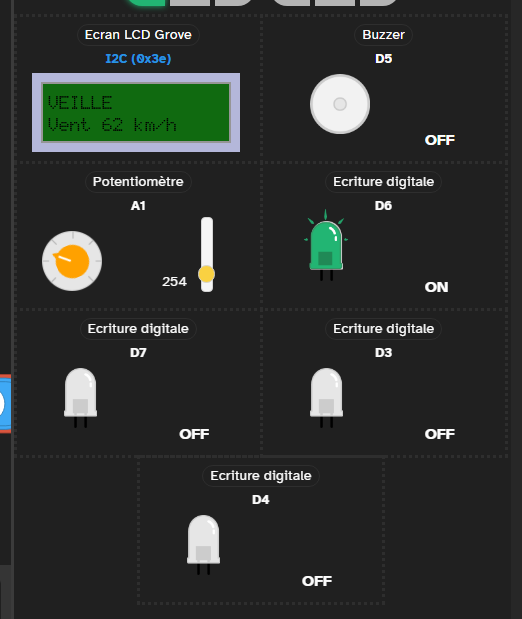
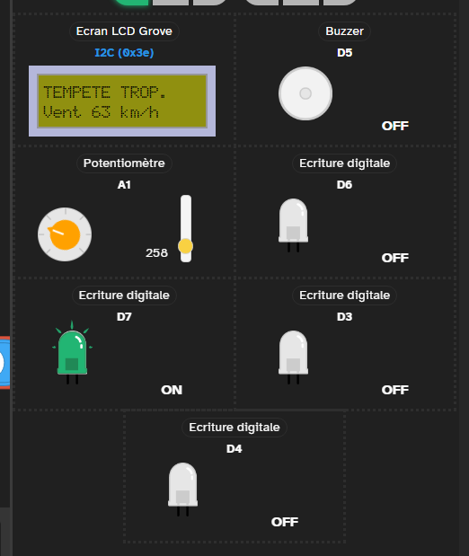
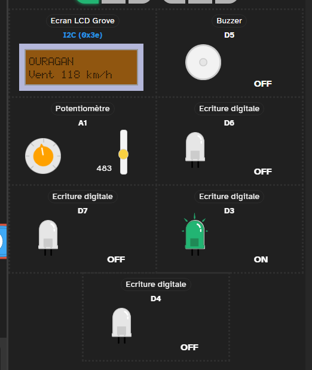
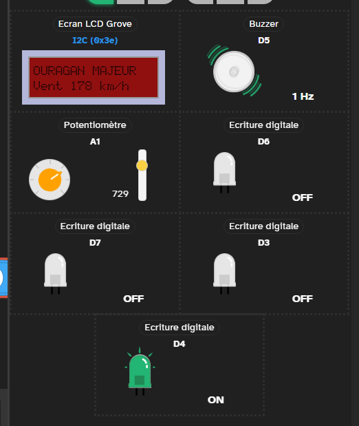

🎯 Page 4 sur 4 — Rédiger le protocole de test, l'exécuter, signer le procès-verbal.
📄 Réseau capricieux, ou besoin de tout avoir sous la main ? La séquence entière en une seule page — mêmes activités, mêmes réponses enregistrées, aucun chargement entre les séances.
Ton parcours 🅰/🅱/🅲 se choisit en page 1 : il est retenu pour toute la séquence. Cette page-ci ne contient aucun bloc propre à un parcours.
Le mode essentiel masque le référentiel, les corrections et les compléments : il ne reste que les consignes et les exercices. À activer si la page te paraît trop chargée.
C'est la station, simulée fidèlement : le curseur joue le rôle du potentiomètre-anémomètre (A1) ; l'écran, les quatre voyants (vert D6, jaune D7, orange D3, rouge D4), le buzzer (D5) et le bouton (D2) réagissent comme sur la vraie carte — y compris la boucle du programme, exécutée environ 5 fois par seconde. Tes expériences ici sont tracées : elles servent à valider les activités et à exécuter ta recette de la séance 4.
Mesure brute correspondante (CAN 10 bits) : — / 1023
Un seul voyant allumé à la fois. Le vert est fixe ; les trois autres pulsent — la pulsation est un signal, pas une décoration. Le niveau est toujours écrit sur l'écran : tu n'as jamais besoin de la couleur seule pour le lire.
Question directrice : quels essais suffisent à PROUVER à la mairie que la station respecte tout le cahier des charges ?

Le niveau attendu est exactement le même qu'avec la consigne libre : ce squelette retire l'obstacle de la rédaction, pas l'exigence scientifique. Recopie-le et complète chaque « ____ ».
Relis le courrier de la mairie exigence par exigence : chaque phrase du courrier doit avoir AU MOINS un essai dans ton protocole. Les frontières sont les valeurs où le comportement DOIT changer.
Un protocole complet ici : 4 nominaux (ex. 40, 90, 150, 200) + 6 frontières (62 et 63 ; 117 et 118 ; 177 et 178) + 1 performance (chrono < 1 s) + 2 interaction (acquitter ; re-déclencher) = 13 essais. Compte les frontières : trois seuils × deux essais chacun (juste dessous, pile dessus). « À partir de 178 » = 178 compris : c'est le cahier des charges qui tranche le ≥, pas le programmeur.
a) 40 km/h (nominal franc) · 117 ET 118 · OURAGAN MAJEUR à 178 pile (« à partir de » = compris, d'où le ≥ du programme) · chronométrer le délai seuil → affichage (exigence < 1 s) · deux essais d'acquittement (couper À l'appui, repartir à l'événement suivant).
b) Protocole attendu (exemple) : essais 1-4 nominaux : 40 → veille (écran vert, vert fixe, tout le reste éteint) ; 90 → tempête tropicale (jaune qui pulse, buzzer muet) ; 150 → ouragan (orange qui pulse, buzzer muet) ; 200 → ouragan majeur (rouge qui pulse + buzzer). Essais 5-10 frontières : 62 → veille et 63 → tempête ; 117 → tempête et 118 → ouragan ; 177 → ouragan et 178 → ouragan majeur.
Essai 11 performance : franchissement de 178, chrono < 1 s. Essais 12-13 interaction : appui sur le bouton pendant l'alarme → le son se coupe, l'écran et le voyant restent ; redescente puis remontée au-dessus de 178 → le buzzer repart. Règle de décision : recette prononcée si 13/13 réussis ; un seul échec = réserve, correction, puis on REJOUE TOUT le protocole (non-régression).
Méthode : chaque exigence du cahier des charges → au moins un essai ; chaque seuil → deux essais (dessous / dessus), donc trois seuils font six essais ; chaque exigence chiffrée → une mesure, pas une impression.
Limite : 13 essais prouvent la conformité au cahier des charges — pas l'absence de TOUT défaut (pluie sur le boîtier, câble arraché… d'autres protocoles existent pour ça).
| N° | Essai | Résultat attendu | Observé ? |
|---|---|---|---|
| 1 | vent 40 km/h | écran vert « VEILLE », voyant vert fixe, buzzer muet | |
| 2 | vent 90 km/h | écran jaune, voyant jaune qui pulse, buzzer muet | |
| 3 | vent 150 km/h | écran orange, voyant orange qui pulse, buzzer muet | |
| 4 | vent 200 km/h | écran rouge, voyant rouge qui pulse, buzzer qui sonne | |
| 5 | frontière : 62 km/h | ||
| 6 | frontière : 63 km/h | ||
| 7 | frontière : 117 km/h | ||
| 8 | frontière : 118 km/h | ||
| 9 | frontière : 177 km/h | ||
| 10 | frontière : 178 km/h | ||
| 11 | performance : chrono seuil → affichage | moins de 1 seconde | |
| 12 | appui pendant l'alarme | le son se coupe, écran et voyant restent | |
| 13 | redescente puis nouvelle alerte | le buzzer repart sans appui |
Le niveau attendu est exactement le même qu'avec la consigne libre : ce squelette retire l'obstacle de la rédaction, pas l'exigence scientifique. Recopie-le et complète chaque « ____ ».
Utilise le champ « valeur exacte » du banc pour viser 62, 63, 117, 118, 177 et 178 pile. Les attendus des essais 5 à 10 se déduisent du courrier : « à partir de 63 », « à partir de 118 », « à partir de 178 » — frontière comprise à chaque fois.
62 → veille (vert fixe) · 63 → tempête tropicale (jaune) · 117 → tempête tropicale · 118 → ouragan (orange) · 177 → ouragan · 178 → ouragan majeur (rouge + buzzer). Le bouton ⏱ du banc mesure le temps de réponse pour toi (la boucle tourne toutes les 200 ms : tu devrais mesurer ≈ 0,2-0,4 s, conforme). N'oublie pas : le PV se signe sur ce que tu as OBSERVÉ, pas sur ce que tu espérais.
Attendus des six frontières : 62 → veille · 63 → tempête tropicale · 117 → tempête tropicale · 118 → ouragan · 177 → ouragan · 178 → ouragan majeur. Un seuil se teste toujours deux fois : juste dessous, et pile dessus. Tous les essais du banc doivent être « conforme » (le programme de référence respecte le cahier des charges) — si tu observes autre chose, note-le : c'est une VRAIE observation, elle va dans le PV.
PV attendu (exemple) : « Le [date], nous avons exécuté les 13 essais du protocole sur le banc de simulation. 13 essais conformes sur 13. Les frontières confirment : veille jusqu'à 62 km/h, tempête tropicale de 63 à 117, ouragan de 118 à 177, ouragan majeur dès 178. Temps de réponse mesuré ≈ 0,3 s (exigence : < 1 s). L'alarme s'acquitte à l'appui et repart au changement de niveau. Recette prononcée, sans réserve. Signé : l'équipe de recette 3e. »
🗽 Le second exemplaire. Souviens-toi que le PV part aussi à New York. Relis le tien en te demandant : un lecteur qui n'a jamais vu la station comprendrait-il ce qui a été testé, avec quelles valeurs, et ce qui a été observé ? Si la réponse est non, ce n'est pas le lecteur qui manque d'informations — c'est le PV. Écris les valeurs (62, 63, 117, 118, 177, 178), l'unité (km/h) et les résultats observés, jamais « ça marche ».
Voici ce que fait le programme de référence aux six valeurs frontières. Ces images n'ont pas été retouchées : ce sont des captures du simulateur de Vittascience, prises l'une après l'autre en déplaçant le potentiomètre. Lis-les par paires : c'est le passage d'une image à la suivante qui prouve le « ≥ ». Entre 62 et 63, un seul kilomètre-heure sépare deux niveaux — et c'est exactement le kilomètre-heure qu'un test « une petite, une moyenne, une grande valeur » n'aurait jamais essayé.




Deux choses à ne pas manquer. ① La valeur brute change à peine (725 → 729) alors que le niveau, lui, bascule : le seuil est une falaise, pas une pente. ② Dans le simulateur, les voyants sont tous dessinés en vert, quelle que soit la couleur réelle de la DEL. Ne juge donc pas à la couleur de l'image : regarde quelle broche est ON, et surtout ce qui est écrit sur l'écran. Une station qui ne parlerait que par la couleur serait illisible — pour le simulateur comme pour un daltonien.
Méthode : observer PENDANT l'essai, verdict essai par essai, conclusion GLOBALE seulement à la fin — et si un essai échoue après correction du programme, on rejoue TOUT (non-régression, comme en 3e_C9.1).
Limite : la recette prouve la conformité AU CAHIER DES CHARGES ce jour-là, sur ce banc : la version 🅰 au labo peut réserver des surprises (contacts, lumière ambiante…) — c'est pour ça que les industriels recettent sur le matériel final.
Toutes ces notions ont été construites dans les activités 1 à 7 — rien de nouveau ici.
Le cahier des charges impose des exigences de comportement et de performance (chiffrées). On élabore l'algorithme en français (seuils, ordre des tests : le plus haut d'abord), on le dessine en algorigramme (🎓 DNB), puis on le traduit en blocs, palier par palier, en testant chaque palier.
Le programme lit des capteurs (A1) ET une entrée humaine (bouton D2). L'acquittement se programme avec un booléen-mémoire (alarmeAcquittee) et la détection d'événement (niveauAlerte ≠ niveauPrecedent). Les blocs deviennent du C++ : la conversion d'échelle → map(), « si / sinon si / sinon » → if / else if / else, affichage dans un sous-programme (afficherEtat()). La mise au point lit la trace du moniteur série pour innocenter la chaîne tronçon par tronçon.
Un protocole de test se rédige AVANT : essais nominaux + cas limites aux frontières (62/63, 117/118, 177/178) + performance mesurée (< 1 s) + interaction humain-machine, chacun avec son résultat ATTENDU. L'exécution remplit le tableau essai / attendu / observé / verdict PENDANT les essais, et le PV de recette conclut : prononcée ou ajournée. Après correction : on rejoue tout (non-régression).
programme = programcapteur = sensorseuil = thresholdboucle = loopacquitter = to acknowledgeévénement = eventtester = to testprotocole de test = test protocolrecette = acceptance testtéléverser = to upload
Le niveau attendu est exactement le même qu'avec la consigne libre : ces débuts de phrases retirent l'obstacle de la rédaction, pas l'exigence scientifique. Recopie-les et complète chaque « ____ ».
Le niveau attendu est exactement le même qu'avec la consigne libre : ces débuts de phrases retirent l'obstacle de la rédaction, pas l'exigence scientifique. Recopie-les et complète chaque « ____ ».
Le niveau attendu est exactement le même qu'avec la consigne libre : ces débuts de phrases retirent l'obstacle de la rédaction, pas l'exigence scientifique. Recopie-les et complète chaque « ____ ».
30 questions pour vérifier toutes les notions de la séquence — dont 4 questions illustrées (algorigramme, montage, chronogramme, protocole) — avec corrections détaillées, minuteur facultatif et reprise possible.
🚀 Ouvrir le QCM d'entraînementPour aller plus loin, au choix — chaque défi a son corrigé replié :
🟣 Défi « niveau violet » : aux Antilles, la vigilance ne s'arrête pas au rouge — après le rouge vient le violet (confinement absolu), puis le gris (phase de sauvegarde, après le passage). La mairie voudrait que le prototype se rapproche de ce vocabulaire réel : un 5e niveau « violet » à partir de 209 km/h (l'entrée en catégorie 4 de Saffir-Simpson : écran violet, buzzer qui sonne par intermittence). Où insérer le nouveau test dans l'algorigramme, et pourquoi À CET ENDROIT ? Et pourquoi le niveau gris, lui, ne peut-il PAS se déduire de la seule vitesse du vent ?
Le test « ≥ 209 » s'insère EN PREMIER, avant « ≥ 178 » : dans une cascade de SI/SINON, le seuil le plus haut se teste toujours d'abord — sinon 220 km/h s'arrêterait à « ouragan majeur » sans jamais atteindre « violet ». Il faut aussi ajouter le comportement (couleur violette, intermittence du buzzer : sonner/attendre dans la boucle) ET mettre à jour le protocole de recette : deux nouvelles frontières à tester, 208 et 209 — le protocole passerait ainsi de 13 à 16 essais (un nominal de plus, deux frontières de plus). Erreur classique : ajouter le test en dernier — il devient inatteignable.
Le cas du gris. Le gris n'est pas « moins de vent » : c'est l'après, décidé par le préfet quand le phénomène est passé. Un vent retombé à 30 km/h peut correspondre au gris… comme au jaune de la veille, ou à un jour ordinaire. Une même entrée, plusieurs sorties possibles : la vitesse du vent ne suffit pas. Il faudrait une mémoire (« sommes-nous DÉJÀ passés par le rouge ? ») et une décision humaine en entrée. C'est exactement la limite d'une maquette scolaire — et la raison pour laquelle un vrai dispositif d'alerte n'est jamais entièrement automatique.
🔔 Défi « double appui » : l'agent voudrait qu'un DEUXIÈME appui sur le bouton ré-active l'alarme (pour re-prévenir un collègue). Quelle variable faudrait-il faire évoluer, et quel piège guette ?
Il faudrait basculer alarmeAcquittee à chaque appui (vrai → faux → vrai…). Le piège : la boucle lit le bouton 5 fois par seconde — un appui d'une demi-seconde serait vu comme 2 ou 3 appuis et l'alarme clignoterait. Il faut détecter le FRONT (l'instant où le bouton PASSE de relâché à appuyé), avec une variable boutonPrecedent — exactement le motif « événement » de l'activité 4. Erreur classique : tester l'état au lieu du front.
🌬 Défi « anémomètre réel » : pour remplacer le potentiomètre par un vrai anémomètre à coupelles, quelles étapes de ton programme changeraient — et lesquelles ne changeraient PAS ?
Change : l'ACQUISITION (un anémomètre à coupelles produit des impulsions à compter, pas une tension à lire — il faudrait compter les tours par seconde) et l'ÉTALONNAGE (convertir des tours/s en km/h selon la doc du capteur). Ne change PAS : la décision (seuils 100/150), l'affichage, l'acquittement, ni le protocole de recette (les mêmes essais restent valables !). C'est l'intérêt de la structuration : chaque étage se remplace sans toucher aux autres. Erreur classique : croire qu'il faut tout réécrire.